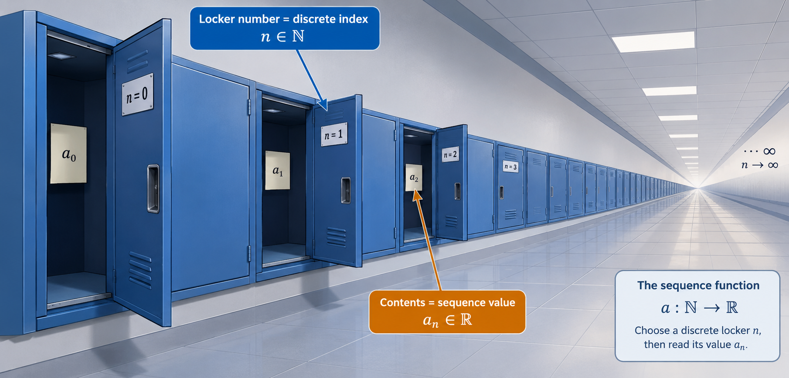

Welcome to Lecture 3. Having built the grammatical machinery of sets and functions (Lecture 1) and solidified the continuous real line $\mathbb{R}$ with completeness (Lecture 2), we now introduce motion into our universe. Here we study sequences—the fundamental vehicles of convergence, approximation, and discrete calculus.
Finding Your Footing: Welcome to Discrete Dynamics
If you have studied calculus in secondary school, functions have almost always meant continuous curves: drawing a parabola $y = x^2$ with an unbroken pencil line, sliding along a smooth curve, or taking the tangent line at any arbitrary decimal value like $x = 1.414$.
In this lecture, we step back from smooth slides and instead examine stepping stones. Rather than gliding smoothly across all real numbers, we take discrete integer steps: step 0, step 1, step 2, step 3... This is the world of sequences.
At first glance, some of the notation—such as subscripts $a_n$, index ranges, and differences between terms—can look intimidatingly formal. Rest assured: every symbol is simply a compact way to label an item in an infinite list. Take your time, picture the lockers and steps, and enjoy seeing how discrete arithmetic lays the foundation for continuous calculus!
1. What is a Sequence? (From Numbered Lockers to Formal Mappings)
📖 Notation Reference: Sequences & Index Notation
Lists through functional eyes: Instead of writing inputs inside parentheses like $f(n)$, sequences use subscript notation $a_n$ to represent the $n$-th value in the list.
$a_n$The $n$-th term of the sequence (the value stored at position $n$)
$(a_n)_{n=1}^\infty$Sequence starting at index $1$ when $n=0$ is undefined (e.g. $a_n = 1/n$)
$a: \mathbb{N} \to \mathbb{R}$Formal definition: a function assigning each natural index $n$ to a real number $a_n$
The Intuitive Picture: An Infinite Hallway of Numbered Lockers
Before writing down any abstract symbols, think of a sequence as an infinite hallway lined with numbered school lockers:
The locker door is labeled with a natural counting number: Locker $0$, Locker $1$, Locker $2$, Locker $3$, and so on. We call this whole number the index($n \in \mathbb{N}$).
When you open door $n$, there is a slip of paper inside with an actual real number written on it. We call that stored number the $n$-th term($a_n \in \mathbb{R}$).

Figure 3.1: The sequence mapping $a: \mathbb{N} \to \mathbb{R}$ visualized as an infinite corridor. Each discrete locker door represents the natural index ($n \in \mathbb{N}$), while the contents inside reveal the corresponding real term ($a_n \in \mathbb{R}$).
The Aha! Moment: Why a Sequence is Actually a Function
Why do pure mathematicians insist on calling this simple list of lockers a function?
Think back to our definition of a function in Lecture 1: a rule that takes every input from a starting set (the domain) and assigns it to exactly one output in a target set (the codomain). That is exactly what our locker hallway does!
You give the system a locker number ($n \in \mathbb{N}$), and it returns the single real number inside that locker ($a_n \in \mathbb{R}$). Therefore:
Formal Definition of a Real Sequence:
A sequence of real numbers is a function $a: \mathbb{N} \to \mathbb{R}$ whose domain is the set of natural numbers $\mathbb{N}$ (or $\mathbb{N} \setminus \{0\} = \{1, 2, 3, \dots\}$) and whose codomain is the set of real numbers $\mathbb{R}$.
Instead of writing function parentheses like $a(n)$, we write the input as a lower subscript:
In mathematics, whether the natural numbers $\mathbb{N}$ include $0$ depends on context and convenience:
When modeling sets, counting dominoes, or building polynomial terms ($c_0 + c_1 x + \dots$), starting at $n=0$ is standard.
When dealing with fractions like $a_n = \frac{1}{n}$, dividing by zero is undefined, so we start at $n=1$.
Neither choice is "wrong." Always check the bottom bound on the index notation $(a_n)_{n=0}^\infty$ versus $(a_n)_{n=1}^\infty$.
2. A Gallery of Fundamental Sequences
How Do We Specify What Goes Inside Each Locker?
When constructing a sequence, there are two primary ways to describe the contents of every locker along the infinite corridor:
An Explicit Formula (Direct Calculation): A direct algebraic equation that lets you calculate the value inside locker $n$ immediately. For example, if $a_n = n^2$, finding the contents of the $100\text{th}$ locker requires no intermediate work: $a_{100} = 100^2 = 10{,}000$.
A Descriptive or Structural Rule (Pattern-Based): A well-defined rule that uniquely determines what number belongs at step $n$, even if there is no high-school algebraic formula to jump there directly. For instance, "let $p_n$ be the $n\text{th}$ prime number" is completely rigorous because every natural index $n$ pairs with a single, unambiguous prime.
🎯 Examples of Fundamental Sequences
The Sequence of Perfect Squares: $a_n = n^2$ (for $n \ge 0$).
Explicit terms: $a_0 = 0,$$a_1 = 1,$$a_2 = 4,$$a_3 = 9,$$a_4 = 16,$ $\dots$ Behavior: Grows without bound as $n \to \infty$.
The Alternating Sequence: $a_n = (-1)^n$ (for $n \ge 0$).
Explicit terms: $a_0 = 1,$$a_1 = -1,$$a_2 = 1,$$a_3 = -1,$$a_4 = 1,$ $\dots$ Behavior: Bounces infinitely back and forth between $1$ and $-1$. It never settles down to a single number!
The Prime Sequence: $p_n$ where $p_n$ is the $n$-th prime number ($n \ge 1$).
Explicit terms: $p_1 = 2,$$p_2 = 3,$$p_3 = 5,$$p_4 = 7,$$p_5 = 11,$ $\dots$ Behavior: This sequence has no simple algebraic formula, yet it is completely well-defined because every natural index $n$ determines a unique prime.
VISUALIZING THE GALLERY: Sequences are Discrete Points, Not Smooth Curves
In secondary school, you drew functions by tracing unbroken curves. In analysis, because the domain is the discrete counting numbers $\mathbb{N}$, a sequence graph consists strictly of isolated points (perched on dashed drop lines) at each natural index $n$.
3. Arithmetic and Geometric Progressions (Deep Dive)
📖 Notation Reference: Progression Parameters
Notice the parameter names: In these formulas, $a, b,$ and $q$ are fixed numbers that define the rule, while $n$ is simply the locker door counter ($0, 1, 2, 3, \dots$).
$c_n = an + b$Arithmetic formula: start at baseline $b$, take $n$ strides of size $a$
$c_{n+1} - c_n = a$Common difference: the fixed stride size added at every single step
$c_n = a \cdot q^n$Geometric formula: start at scale factor $a$, multiply $n$ times by ratio $q$
$\frac{c_{n+1}}{c_n} = q$Common ratio: the constant scaling factor between adjacent terms
If you have ever found arithmetic and geometric progressions confusing or hard to keep straight, take reassurance: that experience is widespread. Traditional courses often rush to introduce $c_n = an + b$ and $c_n = a q^n$ as abstract algebraic recipes to memorize, obscuring the simple concrete patterns underneath.
In reality, only two fundamental operations govern these sequences. You are either choosing a fixed step and repeatedly adding it, or choosing a fixed factor and repeatedly multiplying by it. Keeping that stepping picture in mind removes the guesswork from the algebra.
1. The Intuition: Walking with Strides vs. Multiplying by Zoom
Picture our infinite locker corridor. We want to place numbers inside each locker so that every step follows a rhythmic, predictable beat. There are two natural ways to do this:
Arithmetic Sequences: The Equal-Stride Walker
Imagine standing at position $b$ in front of Locker 0. To reach the next locker, you take a fixed stride forward of length $a$.
$$c_n = an + b \quad (n \ge 0)$$
Why does this formula make sense?
Locker 0: You haven't taken any steps yet: $c_0 = a(0) + b = b$.
Locker 1: You take 1 stride: $c_1 = b + a$.
Locker 2: You take 2 strides: $c_2 = b + a + a = 2a + b$.
Locker $n$: You take $n$ strides: $c_n = an + b$.
Geometric Sequences: The Exponential Multiplier
Imagine Locker 0 starts with quantity $a$. At every subsequent locker, the quantity is multiplied by a zoom factor $q$.
$$c_n = a \cdot q^n \quad (n \ge 0)$$
Why does this formula make sense?
Locker 0: Multiplied 0 times ($q^0 = 1$): $c_0 = a \cdot 1 = a$.
Locker $n$: Multiplied $n$ times: $c_n = a \cdot q^n$.
Interactive StepperThe Stepping Dynamics Simulator: Strides vs. Zoom
Locker Index (n)0
Stored Value (cₙ)2
Transition StepBaseline Initializer
Formula Expansionb = 2
Step Walkthrough Preview
Standing in front of Locker 0. Inspecting the baseline contents before any steps are taken.
⚙️ What Is Happening (Mechanics)
The index pointer is stationed at Locker 0. The value is initialized to the base constant b = 2.
💡 Why The System Does This (Rationale)
Locker 0 represents the state before iteration begins. Because no step difference has been added yet, the step counter is n = 0, leaving only the pure baseline b.
2. The Detective Test: How to Diagnose Any Mystery Sequence
Suppose someone hands you a raw list of numbers and asks: "Is this arithmetic, geometric, or neither?" Don't guess! Run this simple 2-step diagnostic:
Test 1: Subtraction (Checking for Constant Stride).
Subtract each term from its successor: $c_1 - c_0$, then $c_2 - c_1$, then $c_3 - c_2$.
• If all the differences equal the exact same number $a$, you have an arithmetic sequence with common difference $a$!
Test 2: Division (Checking for Constant Ratio).
Divide each term by its predecessor: $c_1 / c_0$, then $c_2 / c_1$, then $c_3 / c_2$.
• If all the quotients equal the exact same number $q$, you have a geometric sequence with common ratio $q$!
🔍 Worked Example: Diagnosing Three Mystery Sequences From Raw Terms
Suppose you are handed three raw lists on an exam and asked to identify their type and determine their closed-form formula for Locker $n$:
Mystery Sequence A:$(7, 11, 15, 19, 23, \dots)$
• Step 1 (Check Differences): $c_1 - c_0 = 11 - 7 = 4$ $c_2 - c_1 = 15 - 11 = 4$ $c_3 - c_2 = 19 - 15 = 4$
• Diagnosis: The difference is constant ($a = 4$). This is an Arithmetic Progression.
• Construct the Formula: Baseline at Locker 0 is $b = 7$. The general term is:
$$c_n = an + b = 4n + 7 \quad (n \ge 0)$$
Mystery Sequence B:$(48, -24, 12, -6, 3, \dots)$
• Step 1 (Check Differences): $c_1 - c_0 = -24 - 48 = -72$ $c_2 - c_1 = 12 - (-24) = 36$ (Not constant! Not arithmetic.)
• Step 2 (Check Quotients): $\frac{c_1}{c_0} = \frac{-24}{48} = -\frac{1}{2}$ $\frac{c_2}{c_1} = \frac{12}{-24} = -\frac{1}{2}$ $\frac{c_3}{c_2} = \frac{-6}{12} = -\frac{1}{2}$
• Diagnosis: The quotient is constant ($q = -\frac{1}{2}$). This is a Geometric Progression.
• Construct the Formula: Starting factor at Locker 0 is $a = 48$. The general term is:
Mystery Sequence C (The Trap):$(1, \frac{1}{2}, \frac{1}{3}, \frac{1}{4}, \dots)$
• Step 1 (Differences):$\frac{1}{2} - 1 = -\frac{1}{2}$, but $\frac{1}{3} - \frac{1}{2} = -\frac{1}{6}$. (Fails arithmetic test.)
• Step 2 (Quotients):$\frac{1/2}{1} = \frac{1}{2}$, but $\frac{1/3}{1/2} = \frac{2}{3}$. (Fails geometric test.)
• Diagnosis:Neither! This is the harmonic sequence $c_n = \frac{1}{n+1}$ (or $1/n$ for $n \ge 1$). Knowing when to say "neither" prevents you from forcing the wrong formula onto a problem!
💡 Why Do We Exclude $a = 0$ and $q \in \{0, 1\}$ in Geometric Sequences?
Students often wonder why textbooks include fine-print restrictions like $a \ne 0$ and $q \ne 0, 1$. The reason is simply to prevent the sequence from "breaking" into a trivial, uninteresting list:
If $a = 0$, then $c_n = 0 \cdot q^n = 0$ for every term. The sequence is permanently frozen at zero.
If $q = 0$, then $c_0 = a$, but every subsequent term becomes $a \cdot 0^n = 0$. It falls off a cliff immediately.
If $q = 1$, then $1^n = 1$, so the sequence is permanently $(a, a, a, a, \dots)$. Nothing is actually scaling!
3. Fully Worked Application Scenarios
🎯 Worked Example A: The Daily Savings Account (Arithmetic Progression)
Scenario: You start with $\$10$ in a piggy bank on Day 0. Every day thereafter, you deposit $\$3$. Let $c_n$ be your savings on Day $n$.
Identify the parameters:
• Base starting amount: $b = 10$ (the value in Locker 0: $c_0 = 10$).
• Step size added daily: $a = 3$ (common difference).
Write the general formula: $$c_n = an + b = 3n + 10$$
Compute the first few terms by hand:
• Day 0: $c_0 = 3(0) + 10 = 10$
• Day 1: $c_1 = 3(1) + 10 = 13$ (notice: $10 + 3 = 13$)
• Day 2: $c_2 = 3(2) + 10 = 16$ (notice: $13 + 3 = 16$)
• Day 3: $c_3 = 3(3) + 10 = 19$
The sequence is $(10, 13, 16, 19, \dots)$.
Jump directly to the future without counting step-by-step:
How much money will you have on Day 50?
You don't need to add 3 fifty times! Just plug in $n = 50$: $$c_{50} = 3(50) + 10 = 150 + 10 = \$160$$
🎯 Worked Example B: Half-Life Decay (Geometric Progression)
Scenario: A sample contains $80\text{ grams}$ of a substance. Each hour, exactly half of the remaining substance decays. Let $c_n$ be the mass remaining after $n$ hours.
Identify the parameters:
• Starting factor: $a = 80$ (the value in Locker 0: $c_0 = 80$).
• Multiplier at each hour: $q = \frac{1}{2}$ (common ratio).
Write the general formula: $$c_n = a \cdot q^n = 80 \cdot \left(\frac{1}{2}\right)^n$$
Jump directly to Hour 6:
How much remains after 6 hours? $$c_6 = 80 \cdot \left(\frac{1}{2}\right)^6 = 80 \cdot \frac{1}{64} = \frac{80}{64} = \frac{5}{4} = 1.25\text{ g}$$
4. Classifying Behavior: Monotonicity and Bounds
📖 Notation Reference: Monotonicity & Boundedness
Describing directional motion: Sequences are classified by whether their terms march in one direction (monotonicity) or remain trapped between physical barriers (boundedness).
$a_{n+1} \ge a_n$Increasing sequence: each term is greater than or equal to the predecessor
$a_{n+1} > a_n$Strictly increasing: every new step climbs strictly higher
$a_{n+1} \le a_n$Decreasing sequence: each term is less than or equal to the predecessor
$a_{n+1} < a_n$Strictly decreasing: every new step falls strictly lower
$m \le a_n \le M$Bounded sequence: trapped between lower bound $m$ and upper bound $M$
1. The Geometry of Monotonicity: Preserving Direction
The word monotonic comes from Greek roots meaning "one single tone" or "one single style." When mathematicians apply this term to an infinite sequence, don't let the formal notation intimidate you. The concept is deeply intuitive: a sequence is monotonic if it picks a single direction along the real line and commits to it forever.
Imagine walking along a trail in mountainous terrain where your position at each minute is recorded:
Strictly Increasing ($a_{n+1} > a_n$): Every step you take gains elevation. You are strictly climbing up the mountain. You are not allowed to step downward, and you are not allowed to stand still. Every locker holds a number strictly greater than the locker before it:
Weakly Increasing or "Non-Decreasing" ($a_{n+1} \ge a_n$): You are hiking upward, but you encounter a flat horizontal plateau (a ridge). You might pause at elevation $100\text{ meters}$ for three steps: $(80, 95, 100, 100, 100, 115, \dots)$. Notice that you have never stepped down. In higher mathematics, this is still classified as increasing! If an instructor wants to guarantee there are no flat plateaus, they will explicitly specify strictly increasing.
Strictly Decreasing ($a_{n+1} < a_n$) and Weakly Decreasing ($a_{n+1} \le a_n$): The exact mirror image. Every step either descends into a valley or crosses a flat stretch, but you are strictly forbidden from taking a single step uphill.
Non-Monotonic (Oscillation / Direction Changes): What if you hike up two steps, drop down one step, and hike up three more? That sequence has changed direction. It fails the test. Prototype sequences like $a_n = (-1)^n = (1, -1, 1, -1, \dots)$ or $a_n = \sin(n)$ bounce endlessly up and down, making them non-monotonic.
Look at the four discrete profiles below. Notice how clearly the discrete points reveal the underlying directional behavior:
VISUALIZING MONOTONICITY: Directional Profiles in the Discrete Plane
Monotonicity means committing to a direction along the real line and never reversing course. Notice that weak monotonicity permits flat horizontal rests, but strictly forbids a step backward.
2. Two Tool-Box Tests: How to Prove Monotonicity
When an assignment asks you to prove that a sequence is monotonic, do not just list the first four numbers! Listing terms only proves what happens at the start; it does not prove what happens all the way to infinity. Use one of these two reliable algebraic methods:
Method A: The Difference Test (Subtract)
Compute the discrete difference $a_{n+1} - a_n$ and inspect its sign:
If $a_{n+1} - a_n \ge 0$ for all $n$, the sequence is increasing.
If $a_{n+1} - a_n \le 0$ for all $n$, the sequence is decreasing.
Best used for: Algebraic polynomials, arithmetic sequences, and sums.
Method B: The Ratio Test (Divide)
For sequences with strictly positive terms ($a_n > 0$), compute the quotient $\frac{a_{n+1}}{a_n}$:
If $\frac{a_{n+1}}{a_n} \ge 1$, then $a_{n+1} \ge a_n$ (increasing).
If $\frac{a_{n+1}}{a_n} \le 1$, then $a_{n+1} \le a_n$ (decreasing).
Best used for: Factorials ($n!$), powers ($q^n$), and exponential terms.
3. Boundedness: Building Fences Around the Infinite List
An infinite sequence has an endless number of terms, but that does not mean its values must fly off to infinity!
Formal Definitions of Bounds:
Bounded Above: There exists a real number $M$ such that $a_n \le M$ for all $n \in \mathbb{N}$. (An impenetrable ceiling).
Bounded Below: There exists a real number $m$ such that $a_n \ge m$ for all $n \in \mathbb{N}$. (An unbreakable floor).
Bounded: A sequence is bounded if it is bounded both above and below: $$m \le a_n \le M \quad \forall n \in \mathbb{N}$$
Equivalently, taking $K = \max(|m|, |M|)$, all terms lie trapped in the symmetric interval: $|a_n| \le K$.
🔗 The Bridge to Lecture 2: Sequences and Suprema
Notice how this connects directly to the Axiom of Completeness from Lecture 2!
If an infinite sequence $(a_n)$ is bounded above, then its collection of outputs forms a non-empty set of real numbers that is bounded above. Therefore, by the completeness of $\mathbb{R}$, that sequence is guaranteed to possess an exact least upper bound: a supremum$\alpha = \sup\{a_n \mid n \in \mathbb{N}\}$. This fundamental bridge will power our convergence theorems in Week 2!
🎯 Worked Example: Testing Monotonicity and Bounds by Hand
Consider the sequence $a_n = \frac{n}{n+1}$ for $n \ge 0$:$$\left(0, \; \frac{1}{2}, \; \frac{2}{3}, \; \frac{3}{4}, \; \frac{4}{5}, \; \dots\right)$$
Step 1: Test Monotonicity using the Difference Method.
Form the difference $a_{n+1} - a_n$:
Since $n \ge 0$, the numerator is $1 > 0$ and the denominator is strictly positive. Therefore:
$$a_{n+1} - a_n > 0 \quad \text{for all } n \in \mathbb{N}$$
Conclusion: The sequence is strictly increasing.
Step 2: Establish Bounds.
• Lower Bound: Because the sequence is strictly increasing, its very first term is its minimum: $a_0 = \frac{0}{0+1} = 0$. Thus, $a_n \ge 0$ for all $n$ (bounded below by $0$).
• Upper Bound: For every natural number $n$, the numerator $n$ is strictly less than the denominator $n+1$. Therefore:
$$a_n = \frac{n}{n+1} < 1 \quad \text{for all } n$$
Thus, the sequence is bounded above by $1$. Conclusion: The sequence is bounded because all infinite terms live trapped inside $$0 \le a_n < 1$$
5. The Algebra of Sequences (Scaling and Sums)
Because sequences are functions whose codomains are real numbers, we can perform arithmetic operations on them term-by-term.
Algebraic Operations on Sequences:
Let $(a_n)_{n=0}^\infty$ and $(b_n)_{n=0}^\infty$ be two sequences in $\mathbb{R}$, and let $\lambda \in \mathbb{R}$ be a scalar.
Scalar Multiplication (Scaling):$(\lambda a)_n = \lambda \cdot a_n$. Every term is magnified or shrunk by $\lambda$.
Sum of Sequences:$(a + b)_n = a_n + b_n$. Consecutive terms at matching index positions are added together.
Product of Sequences:$(a \cdot b)_n = a_n \cdot b_n$.
🎯 Worked Example: Combining Sequences Term-by-Term
Consider the sequences $a_n = 2n + 1$ (odd numbers) and $b_n = (-1)^n$ for $n \ge 0$:
6. Discrete Calculus: The Derived Sequence ($a_n'$)
📖 Notation Reference: The Derived Sequence
Measuring discrete rate of change: The difference between consecutive elements measures how fast the sequence grows per step.
$a_n'$or$\Delta a_n$Derived sequence: difference between consecutive terms $a_{n+1} - a_n$
$a_n' > 0$Indicates the original sequence is strictly increasing at step $n$
$a_n' = 0$Indicates no change between step $n$ and step $n+1$
$a_n' = c$Constant rate of change (characterizes an arithmetic sequence)
In secondary school calculus, you learned that the derivative of a continuous function $f'(x) = \lim_{h \to 0} \frac{f(x+h) - f(x)}{h}$ measures the instantaneous rate of change. But on the discrete ladder of natural numbers $\mathbb{N}$, there is no such thing as an infinitesimal $h \to 0$: the smallest possible step between distinct indices is $h = 1$!
When we evaluate the difference quotient with step size $h = 1$, we obtain:
$$\frac{a(n + 1) - a(n)}{1} = a_{n+1} - a_n$$
This motivates the formal definition of the derived sequence.
Definition: The Derived Sequence ($a_n'$):
Given a sequence $(a_n)_{n=0}^\infty$, the derived sequence$(a_n')_{n=0}^\infty$ is defined by:
VISUALIZATION: Discrete Rate of Change ($a_n' = a_{n+1} - a_n$)
Characterizing Behavior Through the Derived Sequence
In the MTHS120 course notes, Proposition 4 establishes three fundamental connections between a sequence and its derived differences:
Constant Sequences: A sequence $(a_n)$ is constant if and only if its derived sequence is identically zero: $a_n' = 0$ for all $n$.
Increasing Sequences: A sequence is (strictly) increasing if and only if its derived sequence is non-negative (strictly positive): $a_n' \ge 0$ (or $a_n' > 0$).
Decreasing Sequences: A sequence is (strictly) decreasing if and only if its derived sequence is non-positive (strictly negative): $a_n' \le 0$ (or $a_n' < 0$).
The Derived Sequence of Progressions
Progressions Through the Lens of Differences:
Arithmetic Progression Characterization: Let $c_n = an + b$.
Observation: The derived sequence of a geometric progression is another geometric progression with the exact same ratio $q$, scaled by $(q-1)$.
The Invariant Case ($q = 2$):
When the common ratio is $q = 2$, the factor becomes $(q - 1) = (2 - 1) = 1$. Therefore:
$$c_n' = a(2 - 1)2^n = a2^n = c_n$$
Powers of 2 reproduce their own discrete derivative! This is the discrete precursor to the celebrated continuous derivative property: $\frac{d}{dx}e^x = e^x$.
Polynomials and the Binomial Theorem:
For any power sequence $a_n = n^p$ (where $p$ is a positive integer):
The derived sequence drops the polynomial degree from $p$ down to $p-1$ with leading coefficient $p$, mirroring the continuous power rule $\frac{d}{dx}x^p = px^{p-1}$.
7. Reversing the Difference: Partial Sums and Series
What happens if we know the difference sequence $(b_n)$ and want to reconstruct the original sequence $(a_n)$?
In the MTHS120 course notes, this is shown to be the discrete equivalent of integration:
$$a_0 = c, \quad a_1 = c + b_0, \quad a_2 = c + b_0 + b_1, \quad \dots, \quad a_n = c + \sum_{\nu=0}^{n-1} b_\nu$$
Notice that the starting value $c = a_0$ is arbitrary—just like the constant of integration $+C$ in continuous calculus!
Partial Sums Sequence ($s_n$):
For any sequence $(b_n)$, the sequence of partial sums $(s_n)$ is defined by accumulating terms:
Just as continuous integrals can be evaluated using antiderivatives via the Fundamental Theorem of Calculus, discrete sums can be evaluated by identifying which sequence has the given sequence as its derived difference!
🎯 Derivation 1: The Gaussian Sum $\sum_{k=1}^n k$
We want to find a closed-form formula for adding the first $n$ integers: $1 + 2 + 3 + \dots + n$.
The derived sequence of $(n^2)$ is: $(n+1)^2 - n^2 = 2n + 1$.
The derived sequence of $(n)$ is: $(n+1) - n = 1$.
Subtracting the two: the derived sequence of $(n^2 - n)$ is:
$$(2n + 1) - 1 = 2n$$
Dividing by 2: the derived sequence of $\frac{n^2 - n}{2} = \frac{n(n-1)}{2}$ is simply $n$!
Because $\frac{n(n-1)}{2}$ has derived differences equal to the counting indices, its values reproduce the partial sums of the integers. Shifting the index by 1 gives the famous Gaussian summation formula:
$$s_n = 1 + 2 + 3 + \dots + n = \sum_{k=1}^n k = \frac{n(n+1)}{2}$$
🎯 Derivation 2: The Geometric Series Sum $\sum_{\nu=0}^{n-1} q^\nu$
We want to find a formula for the sum of the first $n$ terms of a geometric sequence:
$$s_{n-1} = 1 + q + q^2 + q^3 + \dots + q^{n-1} = \sum_{\nu=0}^{n-1} q^\nu$$
From Section 6, the derived sequence of $(q^n)$ is $(q - 1)q^n$.
Dividing by the constant scalar $(q - 1)$ (assuming $q \ne 1$): the derived sequence of $\frac{q^n}{q - 1}$ is exactly $q^n$.
Therefore, the partial sum must have the form:
$$s_{n-1} = \frac{q^n}{q - 1} + c$$
Determine the constant $c$: At $n=1$, the sum is just the first term: $s_0 = q^0 = 1$.
8. The Grand Arc: From Discrete Rungs to the Continuum
As we close out Week 1, take a step back and examine the magnificent mathematical edifice we have assembled across these first three lectures. What initially appeared to be separate, abstract topics is actually an interconnected three-part symphony:
Lecture 1 established the Grammar: We defined sets without duplicates, paired them through Cartesian products into coordinates, established functions as strict non-ambiguous mappings, and locked the counting numbers into an unbroken inductive ladder using Peano's axioms.
Lecture 2 built the Continuum Stage: We demonstrated that integer fractions $\mathbb{Q}$ leave gaping holes ($\sqrt{2} \notin \mathbb{Q}$), created measuring tapes with absolute value metrics $|x - y|$, and sealed the number line into an unbreakable continuum $\mathbb{R}$ using the Axiom of Completeness and Suprema.
Lecture 3 set Objects in Motion: Today, we unified both worlds. By taking the discrete counting rungs of $\mathbb{N}$ and mapping them into the continuous stage of $\mathbb{R}$, we invented sequences. We measured their discrete speed of change using the derived sequence($a_n' = a_{n+1} - a_n$), proved that arithmetic and geometric progressions possess elegant discrete derivatives, and showed how reversing the difference operator recovers partial sums like Gauss's formula and geometric series!
Where We Go Next Week
If sequences are arrows marching along the real line, what happens when $n$ approaches infinity? Do the numbers bunch up? Do they settle down to a single destination point?
In Week 2, we enter the beating heart of pure analysis: Limits and Convergence($\lim_{n \to \infty} a_n = L$). Using Weierstrass's epsilon-band measuring tape ($\epsilon > 0$) and the completeness of the real line, we will formally define what it means for an infinite journey to arrive at an exact destination. Congratulations on completing Week 1!